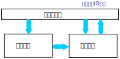
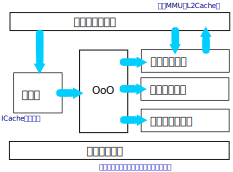

处理器执行模型¶
冯诺依曼计算机¶
本文介绍一下从软件角度如何理解处理器的内部结构。重点不是要介绍怎么设备数字电路 而是从软件开发者角度理解一下通用处理器的执行模型和运行瓶颈会出现在什么地方。
现代通用处理器常常采用冯诺依曼架构。一般理解，就是计算的要求，包括数据和指令， 都从内存中来，回到内存中去。好比这样：

在这个结构中，一个“算法”应该包括一些数据和一些如何处理这些数据的方法，后者也可 以看做是一种“数据”，这种“算法数据”控制控制单元的行为，控制单元再控制计算单元 使用这些数据进行计算，把结果更新回内存。
这个原始的结构经过多年的发展，有很多的变体，但这个基本的结构基本上是不变的。它 比较贴近人脑的思维模型，但不见得在解决问题上是最优的。因为它的执行过程是基于人 脑的“先这样，再那样，然后再那样……”这样一个过程来进行的，但这是人脑的限制，并非 计算的限制。比如我们要描述一个向量加法，我们会把它解释为：先把第一个向量的第一 项加第二个向量的第一项，再把第一个向量的第二项加上第二个向量的第二项。但这个先 后顺序是我们人脑制造的，从计算的角度看，并不需要让第一项做完再做第二项。
但在我们人的语言和思维都存在这个依赖，我们为了把事情说清楚，总是一步一步地说的， 但这些步骤之间是否存在这样的依赖是不一定的。现代通用处理器很多的优化都来自对这 个地方的优化。
流水线¶
我们在综述里面讨论过，每次时钟翻转，同步执行的电路级数是有限的，所以，CPU不可 能一次翻转就从内存里面取出数据，然后分析这个计算要求是什么，进而完成整个计算要 求。所以每次时钟翻转，一个同步电路就只能做其中一步，比如仅仅把指令从内存中取出 来（这样的单元通常称为“取指单元”，或者简称取指）。这个时间内，其他电路，比如判 断这是什么指令的电路（这个单元通常称为译码单元，或者简称译码）就只能闲着。等时 钟再次翻转，译码电路就可以工作了，但这时取指单元是否有必要闲着呢？——看来是没有 必要，因为反正下一条指令迟早也是要取出来的，所以，在这一跳里面，除了译码单元， 其实取指单元也是在工作的，只是不是同一条指令而已）。
但这已经违反了指令的最初语义了：如果我们认为指令是一条指令一条指令执行的，前一 条指令没有完成之前，下一条指令就不应该被执行。但CPU工程师认为“这结果不是一样的 吗？”，这就看你怎么看这个所谓的“结果”了，如果结果仅仅是计算结果，这看来是没有 错的，但如果这个结果包括对时间的要求，这其实也可以说是错的。
但无论如何，CPU工程师还是这样做了，软件工程师也没有意见，最终客户也没有意见。 所以，这就是个既定事实：指令并非是一条一条执行的，而是像工厂的装配流水线一样： 第一个工人装配零件A，第二个工作装配零件B，第三个工人装配零件C。在装配第一台设 备的时候，第二台设备其实同时在装配。这其实是一种并行，一旦这个流水线流动起来， 它的执行速度就是单个工人装配速度的三倍：几乎和三个工人分别装A，B，C的速度是一 样的，但它不需要每个工作都是多面手，同时会做三种不同的工作。对应到芯片上，它 不需要一个译码部件同时可以取指。
早期的处理器教材会通常会讨论“流水线深度”这个概念，它对应的是流水线被分成了多少 个独立的步骤。流水线深度越深，指令的并行度越高，但其实这个概念在宏观上几乎没有 什么意义，因为现在的处理器的复杂度下，每个单元和功能内部还有自己的流水线，而且 每个计算单元的计算时间又不相等，这种简单的“流水线深度”只对很旧的每个单元的计算 速度相同的CPU才有意义。
流水线的引入，可以让很多指令的执行时间可以接近一个时间周期，比如下面是在鲲鹏上 运行Linux的tree命令的执行统计：:
Performance counter stats for 'tree':
6.11 msec task-clock # 0.773 CPUs utilized
4 context-switches # 0.655 K/sec
0 cpu-migrations # 0.000 K/sec
118 page-faults # 0.019 M/sec
4,518,608 cycles # 0.740 GHz
4,122,933 instructions # 0.91 insn per cycle
<not supported> branches
35,192 branch-misses
0.007906460 seconds time elapsed
0.003721000 seconds user
0.003721000 seconds sys
这个执行过程每个cycle可以执行0.91条指令。这并不表示这些指令的执行时间就只有一 个多周期，这只是流水线的效果。
IPC（insn per cycle）是评估一个CPU执行效率的重要指标，因为流水线要顺利执行的前 提是后面的指令不依赖前一个指令的执行效果。但这个前提不一定总是成立，比如一个指 令译码出来发现是跳转，那取指单元把它下一个指令先去出来就是浪费。这种情形很多， CPU工程又想出比如OoO执行，计算结果提前Pass Through，Register Rename一类的手段 来减少这些依赖，我们这里不深入讨论这些优化，只是让读者注意到：不要指望基于硬件 细节来进行优化，否则你的软件没有生命力。意识到流水线的存在，是要我们注意到编译 器的作用。有时不考虑的流水线的手写汇编代码，可能性能远远不如根据流水线进行调度 的编译代码。
Super Scalar处理器¶
鲲鹏920的通用计算核（泰山核）的结构可以示意如下：

它基本上就是个扩展版半的冯诺依曼机器。正如我们前面提到过的，它的每个处理单元可 以流水线式同步执行，但图中的每个单元并不是一个简单结构，在它内部也有自己独立的 流水线。
这个结构中一个有趣的结构是其中的OoO执行单元，OoO是Out of Order的缩写。这又是一 种特殊的优化，它包括更多的提前执行，比如，它可以一次发射多条指令，同时开始译码 （这比流水线一步步跟随更加激进），又比如，它可以在条件语句还没有判断出走哪个分 支的时候，同时执行两个分支的语句，在判断结果出来后，在放弃其中一个分支的结果。 它还可以把没有前一个指令的中间结果在没有返回前，提前Forwards给下一条指令，等等 。这些手段，无论如何变化，其实都是在冯诺依曼基本结构上“偷步”提前执行而已。
小结¶
本节我们初步建立CPU执行的基本逻辑。主要是想给读者建立一个基本的思考模型，为我 们后面讨论更多指令执行细节的时候，可以有一个基础的逻辑空间可以凭借。